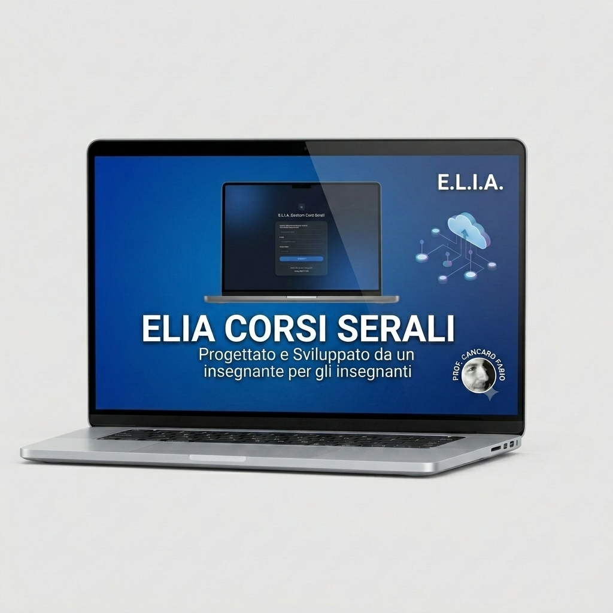
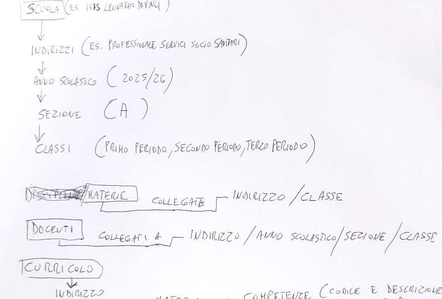

Elia Corsi Serali: la suite gestionale per l'istruzione degli adulti.
Nessuna logica aziendale astratta. Solo risposte concrete ai problemi reali dei corsi serali: automazione dei PFI, gestione reale delle assenze e calcoli ministeriali senza errori. Sviluppata da chi vive la scuola ogni giorno.


Perché Elia Corsi Serali è diversa?
"I software tradizionali sono stati pensati per uffici aziendali o scuole diurne standard. Il serale ha un'anima diversa: studenti lavoratori, percorsi personalizzati e una burocrazia che non perdona. Abbiamo ribaltato la prospettiva: non è la scuola che si adatta al software, ma il software che parla il linguaggio dell'insegnante del serale."
Dall'appunto alla piattaforma: la nascita con l'IA
Guarda come un semplice appunto scritto a mano su carta da un docente si è trasformato, grazie all'intelligenza artificiale, in una suite gestionale completa e funzionante per l'istruzione degli adulti. È un progetto open source che trovi su GitHub.


Gestione assenze, orario e comunicazione
Il nostro sistema avvicina l'ufficio personale alla gestione del serale migliorando la comunicazione e la gestione delle sostituzioni. Inoltre il nostro sistema elabora un orario settimanale pubblico per visualizzare le modifiche all'orario e include un sistema di chat interno per classe e di condivisione documenti.
Registro Prove di Realtà
Valutazione rapida e decentralizzata per i docenti. Inserisci i risultati delle prove di realtà in pochi clic. Stampa del tabellone prove di realtà ed generazione automatica della scheda valutazione studente per le prove di realtà.


Controllo presenze
Il nostro sistema consente un migliore controllo delle presenze evidenziando le assenze giustificate con certificato e depura l'effetto duplicazione delle compresenze sulle % di lezioni erogate presente su Nettuno.
Gestione PFI, Curricolo e Scrutini
Il nostro sistema semplifica l'intero ciclo scolastico del serale: dal caricamento del Curricolo alla stampa dei PFI, fino all'importazione del tabellone degli scrutini e alla generazione automatica della certificazione finale delle competenze per ogni studente (integrando i livelli di aula e le prove di realtà).

Porta Elia Corsi Serali nel tuo Istituto per l'Anno Scolastico 2026/2027
Selezione limitata di istituti per i test di Settembre. Offriamo pricing "Entry-Level" per le scuole che aderiscono alla fase di lancio.
Contatti: elia.soluzioni.ia@gmail.com | fcancaro@gmail.com (docente progettista)